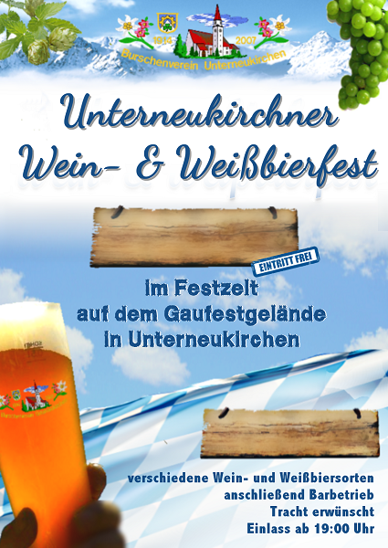
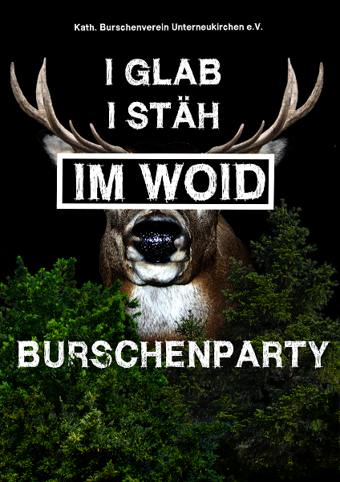
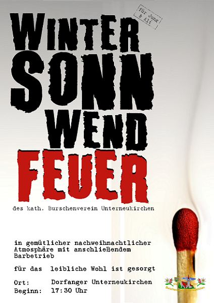
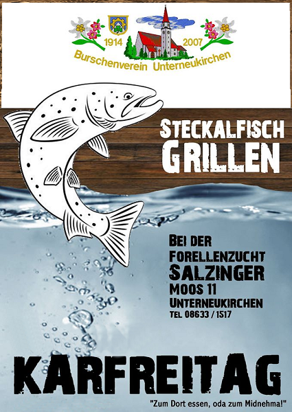
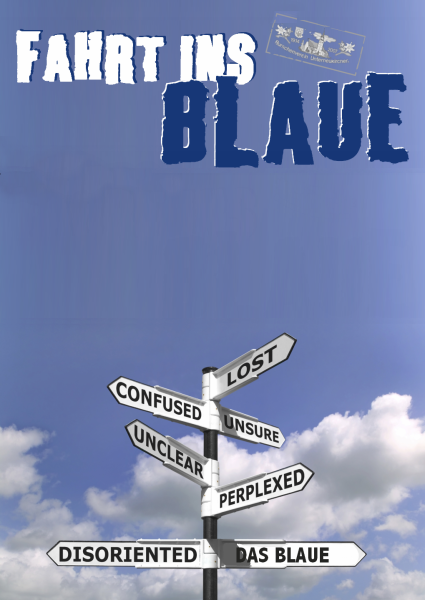

Links
BVU in Sozialen Netzwerken
2018 © | Zur Datenschutzerklärung | Website designed by Sebastian Gruber

Wein- und Weißbierfest |
Burschenparty |
Wintersonnwendfeuer |
Jährlich findt mittlerweile a unsa Wein- und Weißbierfest mit großem Erfolg statt. Do wern verschiedene Wein- und Weißbiersorten serviert. Dazua gibts a gesellige Musi und deftige Brotzeiten. Danoch koma gern no auf a bo gmiadliche Stundn and Bar geh oder man gesellt si für a paar Rundn no an unser eigenes Weißbierkarusell. A Schmankerl für an jedn Unterneikirchna, egal ob er liaba Wein- oder Biertrinker ist. Also auf ind Lederhosn und bsuachts uns. |
Aufgrund der überaus positiven Rückmeldungen bezüglich unserer "I glab I steh im Woid-Party" im Rahmen unseres 100-jährigen Gründungsfestes haben wir beschlossen, die Burschenparty und die "Woid-Party" zu vereinen!
Daher findet seitdem die Unterneukirchner Burschenparty unter dem Motto: "I glab I steh im Woid" statt. Und zwar mit den bewährten Zutaten: Vui Baam, vui Woid und vui bärige Musik zum durchdrahn!
Natürlich a mit unserm Weißbierkarussell. |
Im Schein des riesigen Sonnwendfeuers in da Mittn vom Dorfanger konn ma de Weihnachtszeit bei dem oan oda andern Glühwein ausklinga lassn.
An de vuia gloana Standl rund ums Feuer is fia an jeden wos dabei...vom Zimtstern über Gulaschsuppn bis hin zur Bosna.
As Feuer macht vo außen warm und Glühwein, Winterjacky und Heißer Hugo machan warm ums Herz.
Schauts vorbei und verbringts a bo schene Stunden mid uns in gemütlicher nachweihnachtlicher Atmosphäre. |
|  |  |  |
Steckalfischgrillen am Karfreitag |
Fahrt ins Blaue |
||
Jedes Jahr am Karfreitag ist es wieder soweit. Es findet das traditionelle Steckerlfischgrillen des Burschenverein Unterneukirchen statt.
Es gibt die Steckalfische ganz frisch bei der Forellenzucht Salzinger in Unterneukirchen.
Die Fische können entweder direkt vor Ort gegessen oder auch mitgenommen werden.
|
Für alle Mitglieder ist die Fahrt ins Blaue das absolute Highlight bei den Veranstaltungen des Burschenvereins. Ohne zu wissen wohin die Reise geht, steigen die Burschen in den Bus, um ein unvergessliches Wochenende zu erleben. Wer schon einmal dabei war, der weiß, was ihn erwartet. |
||
|  |  |
2018 © | Zur Datenschutzerklärung | Website designed by Sebastian Gruber